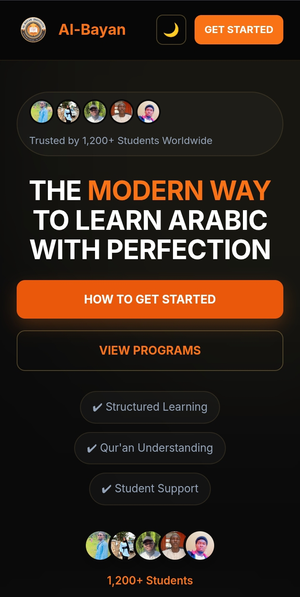
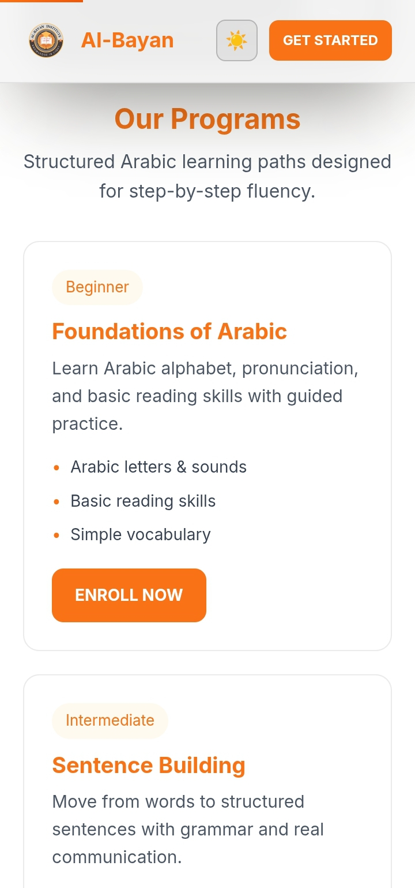
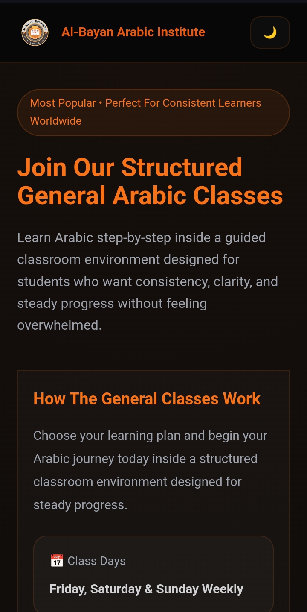

Case Study
A modern institutional landing page designed to attract students, showcase the Arabic institute, and increase admissions conversion.
Landing Page
Institute Focus
Optimized Structure
Loading Speed
The Al-Bayan Landing Page was created as a clean entry point for prospective students to understand the institute’s programs and apply easily.
It focuses on clarity, trust-building, and guiding users toward enrollment.
Clean presentation of the Arabic institute identity.
Designed to increase student enrollment conversion.
Optimized for all screen sizes and devices.
Lightweight structure for smooth loading experience.



The landing page improved user engagement and significantly increased inquiry flow from prospective students.
It strengthened the institute’s online presence and credibility.
I design high-converting landing pages for schools, businesses, and organizations.
Contact Me